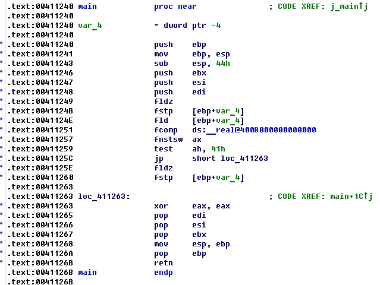

Код С++
Ассемблерный листинг
41h это 65 в десятичной и 01000001b в двоичной
После выполнения этого кода С++ и выгрузки состояния флагов (инструкция fnstsw) сопроцессора в регистр AX, регистр AH выглядит так:
ah=00000001b=0000.0001b=0x1h
Что значит "меньше".
Сначала в регистр ax записывается состояние флагов сопроцессора при помощи инструкции fnstsw. Затем выполняется команда TEST сравнивая ah и значение 41.
Команда TEST выполняет логическое И (т.е. AND) между всеми битами двух операндов. В зависимости от результата могут быть изменены флаги ZF, SF, PF. Инструкция TEST всегда сбрасывает флаги OF и CF.
В результате операции fcomp состояние флагов арифметического сопроцессора такое- если больше устанавливает CF=0, ZF=0; если меньше то CF=1, ZF=0, если равно CF=0, ZF=1
Таким образом, если "меньше" ah = 0000.0001b, если "равно" ah = 0100.0000b, и если "больше" ah = 0000.0000b.
В нашем случае если ZF = 1 или CF = 1 значит «меньше или равно» сравнивается с числом 41h и если выполнить инструкцию TEST то она выдаст результат true, значит выполнится jnz и следовательно будет переход на метку. В регистре AH не может содержаться 41h - это значило бы что число одновременно и меньше и равно. Регистр AH либо равен 40h что значит равно (установлен ZF), либо 1h что значит меньше (установлен CF), либо 0 что значит больше. А сама проверка регистра AH идет со значением 41h.
Если ZF = 0 и CF = 0 значит больше (регистр AH содержит все нули), и результат TEST выдаст false то есть перехода jnz не будет на метку.
Аналогично давайте рассмотрим код наоборот.Код на С++.
Ассемблерный листинг.
Здесь осуществляется переход jp. Этот переход осуществляется в том случае, если в результате последней операции (в нашем случе это TEST) установлен флаг PF Parity Flag это флаг четности. Флаг четности устанавливается в 1 если в байте четное количество единиц, или если было переполнение- то есть в байте все нули. В числе 41h четное количество единиц, но 40h это установленый флаг ZF (значит равно), а 1h это установленный флаг CF (значит меньше). После выполнения операции TEST регистр AH не может быть 41h (две единицы в байте - это четное количество) - то есть число в результате сравнения одновременно меньше и одновлеменно равно быть не может. Число может быть либо меньше AH = 1h либо равно AH = 40h. А это всегда по одной единице в байте. Значит переход jp осудествляется если число больше- то есть AX содержит все нули (переполнение).